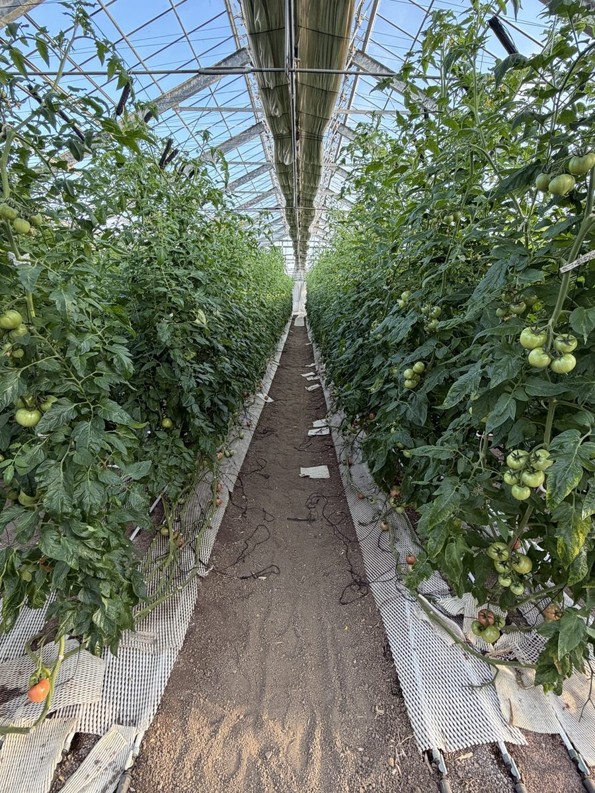
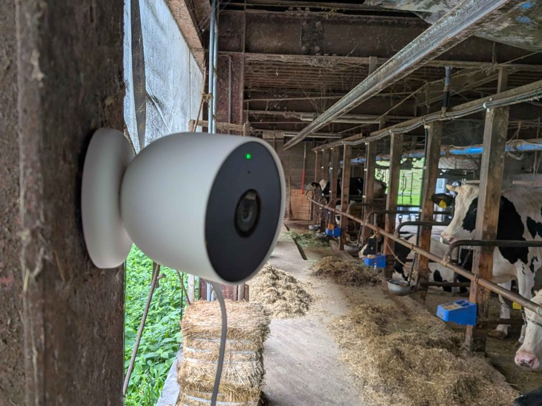
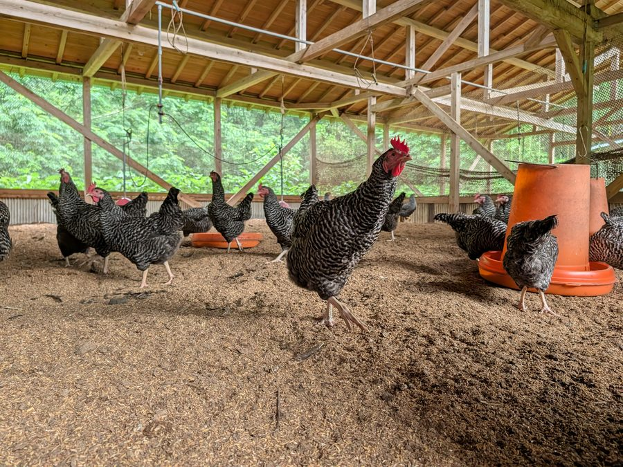
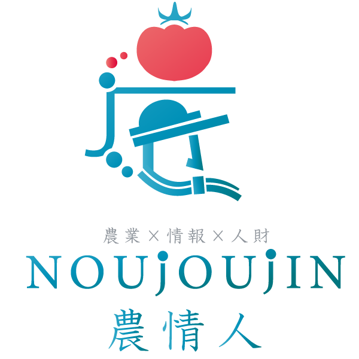
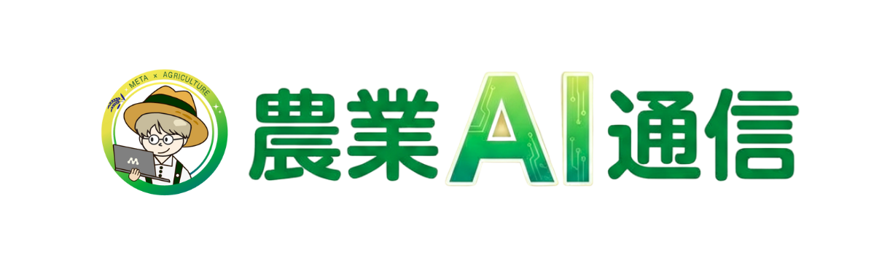
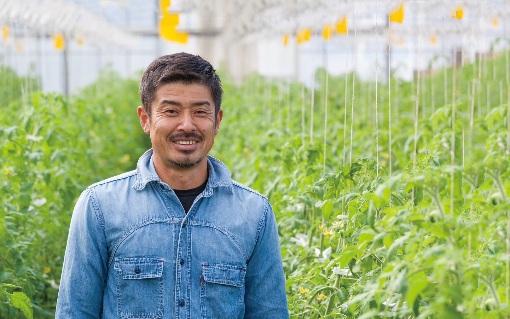
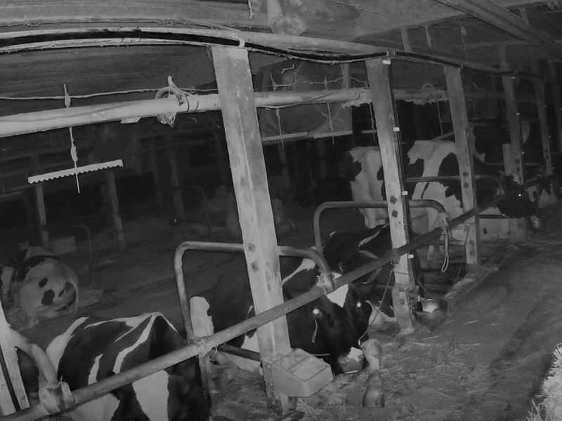
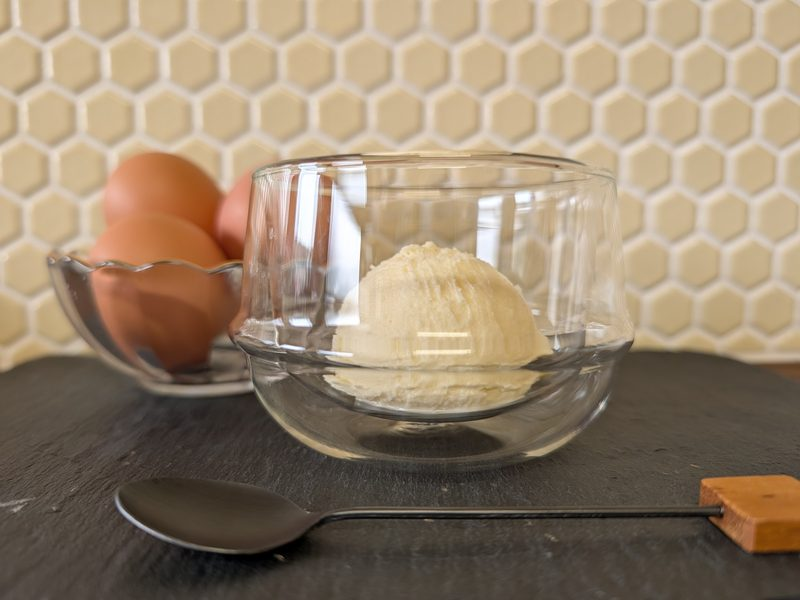
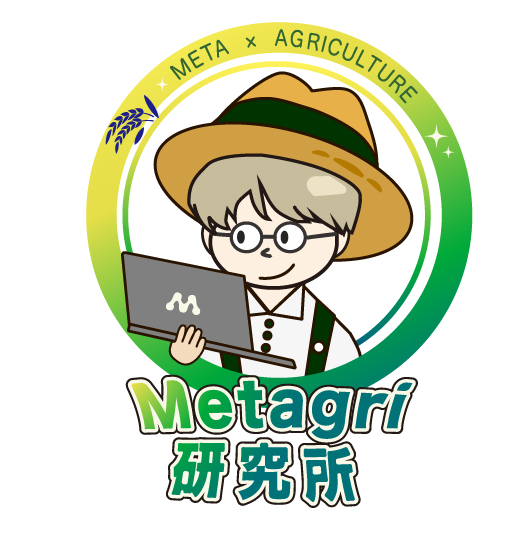

試してみたい。
でも、何から？
AIに興味はあるけれど、自分の農園でどう使えばいいのか分からない。
農業の現場から、AIをはじめよう。
あなたの農園の「困った」に、一緒に考え、試すパートナーを。
記録も、数字も、発信も。
日々の仕事から、AIで試せることを見つけて、
現場で使える形にしていきます。
登録内容を確認・審査してご案内します。登録時点では契約になりません。



農業AI通信で取材してきた現場から


01YOUR FIRST STEP
AIのことより、まずは仕事のことから。
今の困りごとを、一緒に整理しましょう。
AIに興味はあるけれど、自分の農園でどう使えばいいのか分からない。
日報や原価の数字がたまっても、次の一手につながらない。
商品の魅力も、経験や作業のコツも。伝わる形にまとめたい。
02WHAT WE DO
答えを渡して終わりではなく、
一緒に試して、振り返って、整える。
農園に合った使い方を育てます。
記録・数字
日報や表計算のデータから「何を知りたいか」を整理。AIに渡す情報や聞き方を一緒に考えます。
発信・手順づくり
商品説明、農園の発信、作業の手順書。今ある情報や経験をもとに、伝わる形を一緒に作ります。
現場データ
温湿度などの記録を、毎日の確認に役立てる方法を検討。機器やシステムが必要な場合は、範囲と費用から整理します。
03FIELD STORIES
農業AI通信で紹介してきた取り組み。
農園の課題によって、使い方も変わります。
農業AI通信 メディアアンバサダーAIの役割：参謀
kamokobuさん / 農業法人での実践
品種別原価や作業日報の見える化を出発点に、AIを経営判断の相談相手に。対話を通じて、何を知りたいのかを言葉にしていきました。
伴走の視点まず、目的を言葉にする。
農業AI通信の記事を読む
FIELD NOTE / 02ひろしま農園 / 現場の一枚農業AI通信 メディアアンバサダーAIの役割：鏡
ひろしま農園さん / 温湿度・積算温度
市販センサーとスプレッドシートで、現場のデータを記録する仕組みづくり。数字を確認しながら、AIにも相談して使い方を広げていく実践です。
伴走の視点現場で確かめながら使う。
農業AI通信の記事を読む伴走支援の事例

目
相棒これまでの取り組みの紹介です。支援内容や到達点は、農園ごとに異なります。経営・数字の図はイメージです。写真は各農園の取材・事例資料のもので、AIの役割（目・鏡・参謀・相棒）は書籍での整理に基づきます。
04HOW IT WORKS
まずは状況をお聞きして、支援の進め方を考えます。
目的・AIの利用状況・予算感をフォームでお知らせください。
内容と対応体制を確認し、支援の可否や次の進め方をご連絡します。
対応可能な場合は、30分程度のオンライン面談で希望を伺います。
支援内容と費用をご提案。合意し、契約してからスタートします。
05SUPPORT PLAN
オンラインでの対話を中心に、
今の仕事と予算に合わせてご提案します。
月5万円〜
内容・頻度に応じて、個別にお見積もり
面談頻度や支援範囲、ツール・機器等の費用は、個別のご提案でご案内します。予算が未定の場合も、その旨をお知らせください。
今の状況を相談する
FARM × AI × PEOPLE農業の現場に、
新しい選択肢を。
06OUR TEAM
農業分野でのAI活用支援と、実践事例の発信に取り組む株式会社農情人が、窓口・契約主体となります。
農業コミュニティ「Metagri研究所」や「農業AI通信」での実践をもとに、農園の仕事に合うAIの使い方を考えます。
07QUESTIONS
はじめる前の気になること。
はい。フォームの利用状況で「使ったことがない」をお選びください。ご経験や相談内容に応じた進め方をご案内します。
オンラインを中心とした支援を想定しています。対面をご希望の場合は相談内容にご記入ください。地域や内容を確認してご案内します。
登録時点では契約になりません。内容を確認・審査し、支援内容と費用に合意してから契約します。
LET’S TAKE THE FIRST STEP
目的がまとまっていなくても大丈夫。
今の状況と予算感をお聞かせください。
内容を確認・審査し、支援の可否と次の進め方をご案内します。
フォームは現在準備中です。
この表示から個人情報の入力・送信はできません。
登録時点では契約になりません。